EVEWorld
Physical Evolution Supervision for Embodied World Models
Process-level supervision for physically consistent target evolution.IGR promotes target-instance consistency, TIA promotes cross-frame consistency, and MLR quantifies persistent target-instance violations.
vs 11.11% Standard SFT
11.11 → 1.59
73.81 → 80.16
53.57 → 60.85
27.39 → 13.38 vs. Standard SFT
#6 JEPA Similarity · #17 overall
Background rollouts: our WorldArena 2.0 Track 1 submission. DreamGenBench metrics use the main GigaWorld-based setting unless otherwise noted.
Visual plausibility does not guarantee physically consistent target evolution.
Embodied world models can generate visually plausible interactions while violating the physical evolution of the manipulated target. During a rollout, the target may undergo unsupported duplication or disappearance, or preserve its instance count while exhibiting deformation or identity drift across frames.
EVEWorld introduces process-level evolution supervision for physically consistent target evolution. Instance-Guided Restoration (IGR) promotes target-instance consistency by restoring count-perturbed demonstrations, while Temporal Instance Alignment (TIA) promotes cross-frame consistency by aligning target representations across adjacent frames. We further introduce the Model Laziness Rate (MLR), an occlusion-aware and persistence-aware rollout-level diagnostic for target-instance consistency.
Instance-Guided Restoration
Restoration supervision for target-instance consistency.
Restores clean demonstrations from count-perturbed inputs, with stronger supervision on restoration-related regions.
Temporal Instance Alignment
Temporal alignment for cross-frame target consistency.
Aligns target representations across adjacent frames through local matching and cross-frame feature transport.
Model Laziness Rate
Rollout-level diagnosis of persistent target-instance violations.
Anchors evaluation to the conditioning observation and combines temporal persistence with occlusion-aware under-count handling.
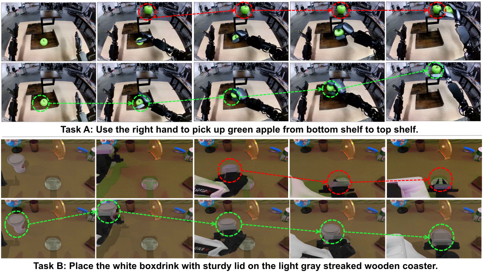
Two supervision gaps underlie inconsistent target evolution.
Standard frame-level reconstruction emphasizes local visual fidelity but provides limited process-level supervision over target evolution. This leaves two complementary gaps: target-instance consistency and cross-frame consistency.
Model Laziness
The target-instance count deviates from the conditioning state without support from the task, producing unsupported duplication or disappearance during the rollout.
ML = 𝟙[ ∃t ∈ {1, …, T} : Nt ≠ N0 ] — A Model Laziness event occurs when the target-instance count deviates from its initial value at any point in the generated rollout.
Unsupported duplication Nt > N0
An additional target instance emerges during the rollout, violating consistency with the initial target state.
Unsupported disappearance Nt < N0
A target instance remains missing after robot-supported occlusion has been excluded.
Cross-frame consistency
Nt = N0 is necessary but not sufficient.
Even with the correct instance count, the target may exhibit deformation, fading, abrupt displacement, or identity drift across adjacent frames.
Missing instance-consistency supervision
The perturbed target region occupies only a small fraction of the full frame, allowing its reconstruction signal to be diluted by the surrounding scene. In controlled corruption experiments, Standard SFT retains 92–99% of the injected duplicate area.
IGR provides direct restoration supervision for the correct target-instance state.
Missing cross-frame consistency supervision
Correct target count alone does not establish correspondence between the target at adjacent frames. Consequently, locally plausible predictions may still drift in appearance, geometry, or identity over time.
TIA introduces explicit cross-frame alignment of target representations.
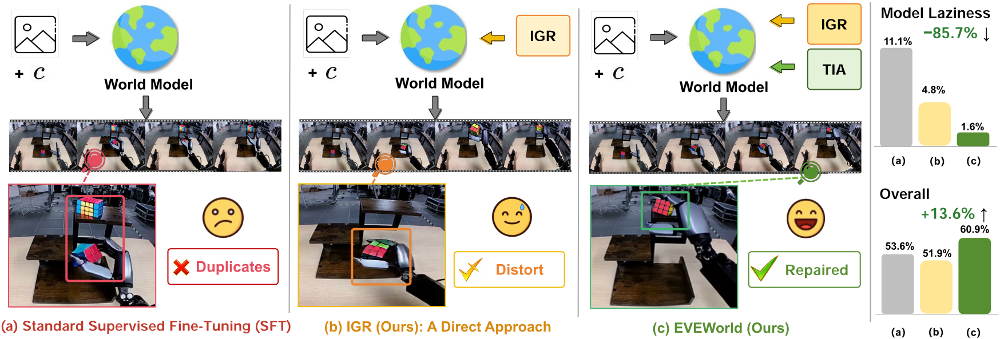
Instance restoration and temporal alignment for physically consistent target evolution.
EVEWorld retains the host model's native representation and introduces two complementary forms of evolution supervision during post-training: IGR promotes target-instance consistency through restoration supervision, while TIA promotes cross-frame consistency through temporal feature alignment.
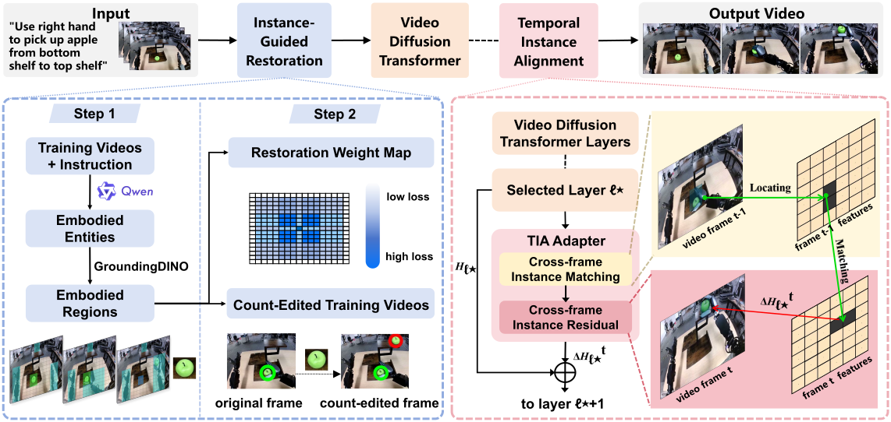
Instance-Guided Restoration (IGR)
Restoring the correct target-instance state from count-perturbed demonstrations.
- Construct count-edited demonstrations by inserting an additional target instance into clean training videos.
- Encode the clean and count-edited videos in the pretrained VAE latent space.
- Optimize restoration toward the clean latent representation, assigning 3× reconstruction weight to restoration-related regions and normalizing the spatial weight map to unit mean.
clean demo → + duplicate → count-edited demo → world model → clean target state
Temporal Instance Alignment (TIA)
Aligning target representations across adjacent frames.
- Select the attachment layer using an offline layer-wise target-matching probe.
- Perform local cross-frame instance matching at the selected layer.
- Transport matched previous-frame features into the current representation through a bounded, zero-initialized residual, with correspondence supervision toward the true next-frame target location.
frame t−1 target → local matching → feature transport → ΔH → frame t representation
Training-only localization supervision. At inference, cross-frame matching operates directly on the model's hidden features and requires neither target localization nor an external tracker.
Method details

TIA layer selection. The probe swept blocks 8–26 on each backbone and picked the layer whose adjacent-frame target matching is most reliable; block 23 is selected for GigaWorld-0 / DreamGen and for AgiBot, block 12 for FlowWAM. EPE is the mean endpoint error in token cells; reliability is defined per domain (object–background separation for DreamGen, static-feature stability for AgiBot, moving-pair top-1 hit rate for FlowWAM). TIA runs with a 64-d projection, 7×7 windows, temperature τ = 0.07 and residual scale γ = 0.1.
| Setting | Selected block | EPE ↓ | Reliab. ↑ |
|---|---|---|---|
| GigaWorld-0 / DreamGen | 23 | 0.55 | −0.10 |
| AgiBot | 23 | 5.72 | 0.76 |
| FlowWAM | 12 | 3.42 | 0.182 |
Spatial-weight design for IGR. We vary both the support of the restoration supervision and its relative weight. “Legacy” is the original five-level map; the other variants use binary weighting. Coverage is the fraction of spatiotemporal latent locations that receive an emphasized weight. The development MLR / IF columns compare candidates under a shared internal protocol and are not directly comparable to the main results; the simpler binary 3× map (Interaction-3x) was adopted.
| Design | Spatial support | Relative weight | Coverage (median) | MLR ↓ | IF ↑ | |||
|---|---|---|---|---|---|---|---|---|
| Path / loc. | Arm / grip. | Paste | Base | Emph. | ||||
| Legacy multi-level | ✓ | ✓ | ✓ | 0.5 | 2/3/4/6 | 0.2679 | 2.18 | 60.31 |
| Binary-3 | ✓ | ✓ | ✓ | 1 | 3 | 0.2685 | 2.21 | 60.26 |
| Path+Loc-2x | ✓ | · | ✓ | 1 | 2 | 0.2380 | 3.34 | 59.82 |
| Path+Loc-3x | ✓ | · | ✓ | 1 | 3 | 0.2147 | 3.08 | 59.96 |
| Interaction-2x | ✓ | ✓ | ✓ | 1 | 2 | 0.5361 | 2.06 | 60.42 |
| Interaction-3x | ✓ | ✓ | ✓ | 1 | 3 | 0.5361 | 1.94 | 60.57 |
Rollout-level evaluation of persistent target-instance violations.
MLR is a dedicated diagnostic for persistent target-instance inconsistency. It derives the expected target count from the conditioning observation, requires no ground-truth future, excludes robot-supported under-counts, and uses temporal persistence to suppress isolated detector fluctuations.
Case A — Robot-supported occlusion
An under-count is exempted when target–robot overlap supports temporary occlusion, so the adjusted count remains consistent with the initial target state.
Case B — Persistent disappearance
If the target remains missing after the occluder moves away and the adjusted count deviates at consecutive sampled timestamps, the rollout is marked as an MLR event.
Case C — Unsupported duplication
Over-counts are always retained as duplication evidence and are not eligible for the occlusion exemption.
Only rollouts whose target is detected in the conditioning observation enter the denominator, so every model is evaluated on the same detector-eligible set.
Computed per eligible video and reported as a percentage; lower is better. The adjusted count Ñt is the raw GroundingDINO count after robot-supported occlusions are discounted.
Eligibility is fixed from the conditioning observation. A rollout is counted as Model Laziness only when the adjusted target count remains inconsistent for at least two consecutive sampled timestamps.
MLR is a dedicated consistency diagnostic rather than a composite measure of overall video quality. It should therefore be interpreted jointly with motion, visual-quality, and instruction-following metrics. A low MLR alone does not imply strong dynamics or task execution.
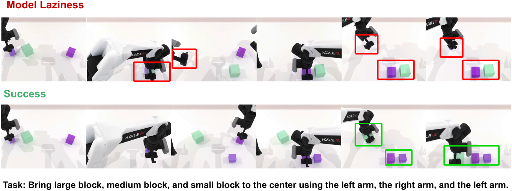
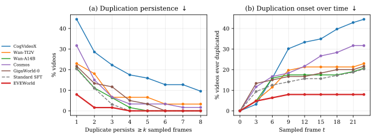
Target evolution under matched initial conditions and instructions.
We compare matched rollouts generated from the same initial observation and instruction. The qualitative analysis focuses on whether the manipulated target preserves its instance state and cross-frame identity throughout the interaction.
Every tile is a generated rollout of the same backbone under the same instruction and start frame; the conditioning still is identical across the arms of a task and is not repeated inside each tile. Click a tile to play it.
- What to compare. Whether the clock keeps a single instance and a stable shape across the four arms as the hand transfers it to the teal plate.
- What to compare. Whether the cup keeps its instance state and cross-frame identity across the four arms during the move between plates.
- What to compare. Whether the bread slice keeps a single instance and a consistent appearance across the four arms through the transfer to the blue plate.
Additional examples
- What to compare. Whether the manipulated target preserves its instance state and cross-frame identity across the four arms.
Clip provenance and source notes
Qualitative clips are unedited model rollouts generated under matched instructions and initial conditions. A model arm is omitted only when the corresponding rendering is unavailable; all displayed comparisons preserve the source evaluation setting.
More qualitative stills from the paper
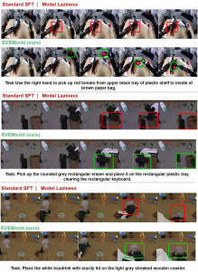
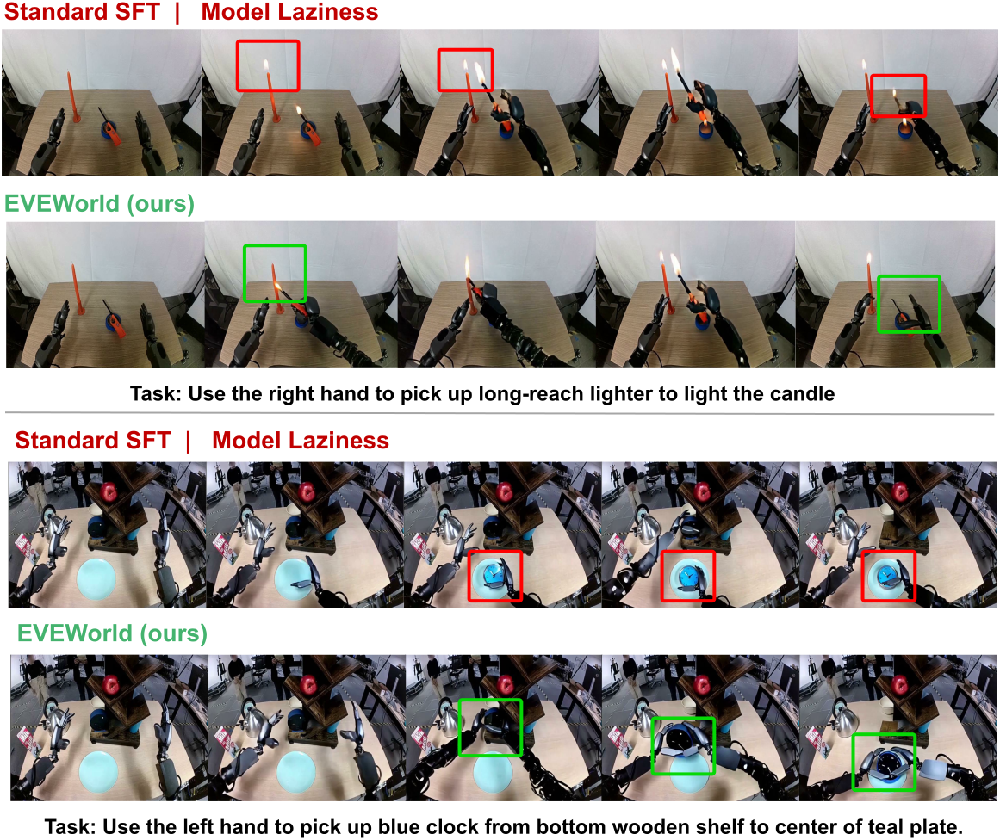
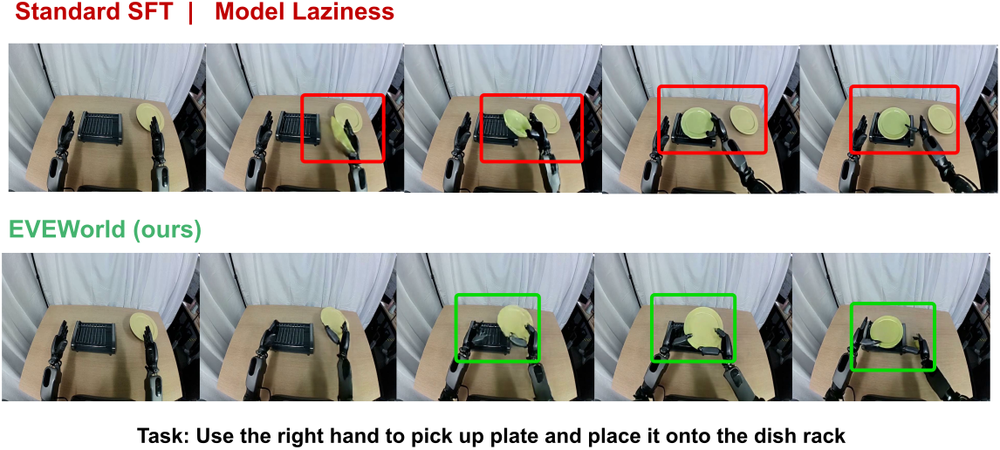
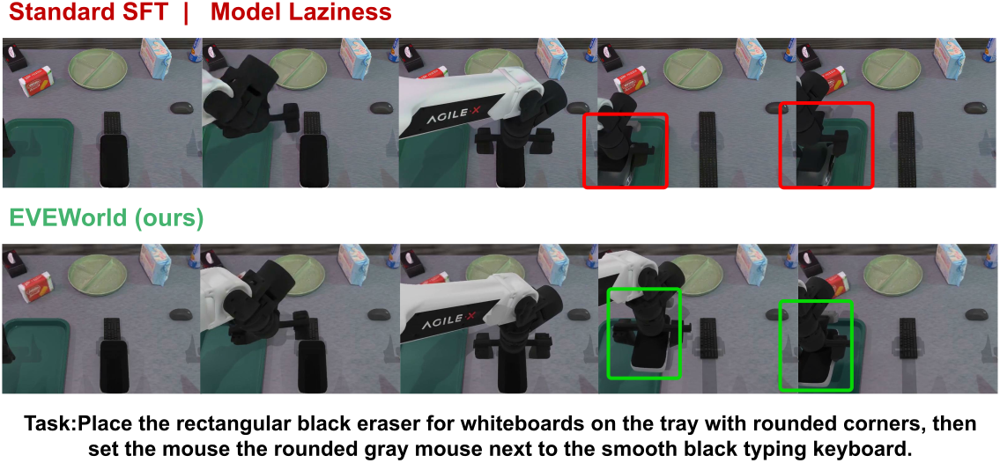
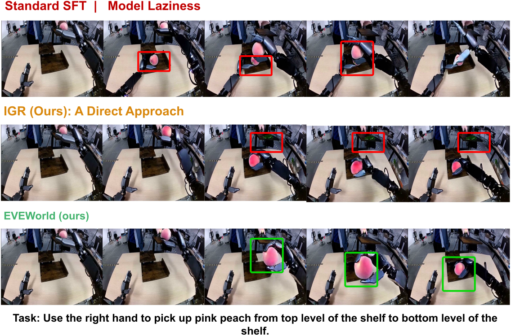
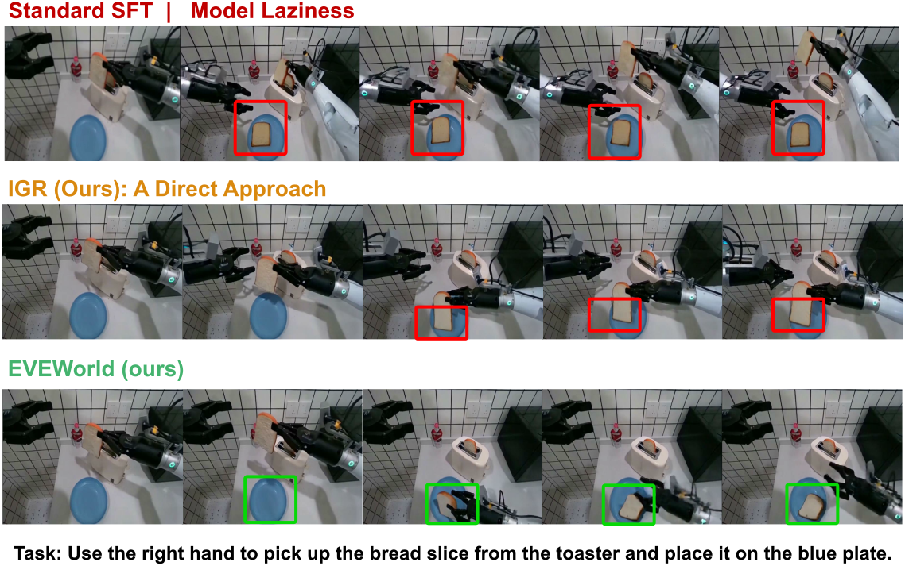
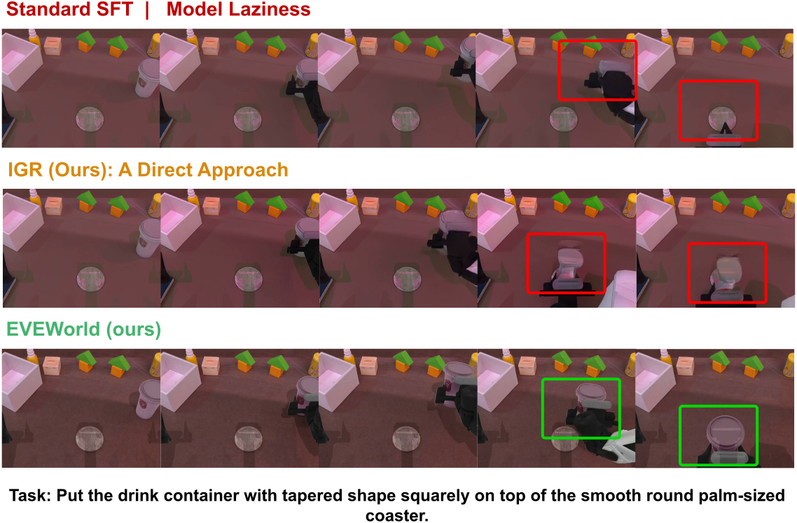
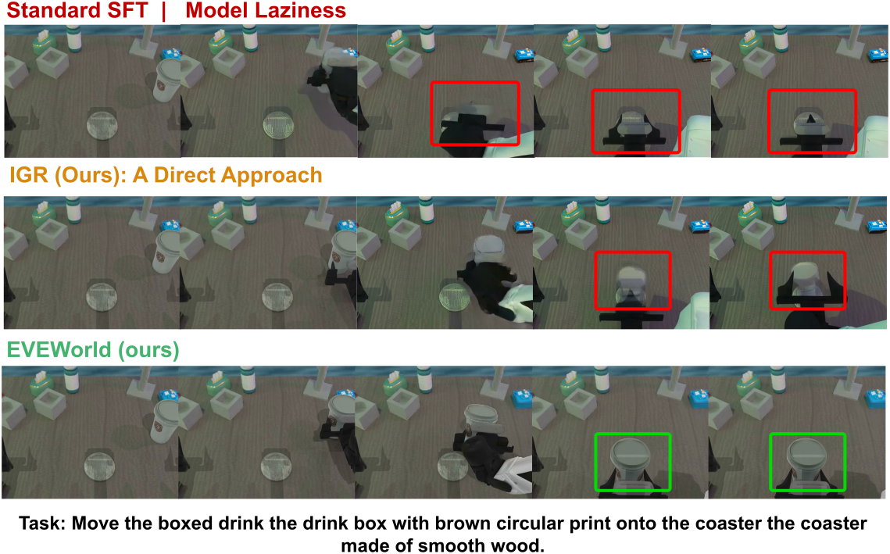
Generalization across domains, training distributions, and model backbones.
We evaluate evolution supervision beyond the main DreamGen setting through zero-shot domain transfer, post-training on a different data distribution, and cross-backbone transfer to FlowWAM.
WorldArena 1.0
Under the released WorldArena 1.0 evaluation protocol on the 157 shared eligible prompts, EVEWorld improves Overall from 53.95 to 56.76 and reduces MLR from 27.39% to 13.38% relative to Standard SFT. The largest gains occur in motion-sensitive metrics, including Dynamic Degree 48.49 → 62.90 and Flow 7.82 → 10.98.
Not every appearance/consistency submetric improves, so MLR is shown together with the full evaluation profile: Image Quality moves 60.71 → 59.82. A low MLR on its own is not a quality claim — the weakest baseline of the table posts the lowest MLR (2.55) together with the lowest Dynamic Degree (20.71).
WorldArena 1.0 — zero-shot transfer on the 157 shared eligible prompts. Bold marks the best result among the GigaWorld-based models (bottom group); general I2V baselines are not bolded. IQ: Image Quality; AQ: Aesthetic Quality; DD: Dynamic Degree; MS: Motion Smoothness; SC: Subject Consistency; BC: Background Consistency; PC: Photometric Consistency.
| Method | Appearance | Motion | Consistency | Main metrics | ||||||
|---|---|---|---|---|---|---|---|---|---|---|
| IQ ↑ | AQ ↑ | DD ↑ | Flow ↑ | MS ↑ | SC ↑ | BC ↑ | PC ↑ | Overall ↑ | MLR (%) ↓ | |
| General I2V models (zero-shot) | ||||||||||
| CogVideoX | 24.51 | 34.80 | 20.71 | 7.24 | 50.78 | 54.96 | 66.35 | 10.20 | 33.69 | 2.55 |
| Wan-TI2V | 33.48 | 37.90 | 33.00 | 11.38 | 61.86 | 68.88 | 77.17 | 18.19 | 42.73 | 17.20 |
| Wan-A14B | 51.93 | 43.37 | 42.29 | 8.04 | 64.13 | 67.69 | 75.37 | 33.61 | 48.30 | 29.94 |
| Cosmos | 57.88 | 38.83 | 50.46 | 16.69 | 71.61 | 64.14 | 73.71 | 21.42 | 49.34 | 8.28 |
| GigaWorld-based models | ||||||||||
| GigaWorld-0 | 58.53 | 38.79 | 44.36 | 7.74 | 61.67 | 77.90 | 88.13 | 48.32 | 53.18 | 27.39 |
| Standard SFT | 60.71 | 38.36 | 48.49 | 7.82 | 64.04 | 79.34 | 88.67 | 44.17 | 53.95 | 27.39 |
| EVEWorld | 59.82 | 37.35 | 62.90 | 10.98 | 67.82 | 78.72 | 88.91 | 47.58 | 56.76 | 13.38 |
EWMBench
Using the same AgiBot training data and optimization budget, EVEWorld improves Motion from 61.51 to 63.65 and Overall from 3.7066 to 3.7525 over Standard SFT, with the largest gain in DYN 14.88 → 17.55. Individual component metrics remain mixed rather than improving uniformly.
The table below reports the whole profile: Scene improves over Standard SFT (84.38 → 86.37) while remaining below the untuned backbone, and HSD and nDTW stay close to, but slightly below, the Standard SFT values.
AgiBot → EWMBench transfer. EVEWorld improves Motion, DYN, Scene, and Overall over Standard SFT; HSD and nDTW remain slightly below.
| Method | Motion ↑ | Semantics ↑ | DYN ↑ | HSD ↑ | nDTW ↑ | Scene ↑ | Overall ↑ |
|---|---|---|---|---|---|---|---|
| GigaWorld-0 | 50.30 | 2.2497 | 7.19 | 23.29 | 19.83 | 89.58 | 3.6486 |
| Standard SFT | 61.51 | 2.2477 | 14.88 | 24.35 | 22.28 | 84.38 | 3.7066 |
| EVEWorld | 63.65 | 2.2524 | 17.55 | 24.12 | 21.97 | 86.37 | 3.7525 |
FlowWAM / RoboTwin
With the backbone swapped to FlowWAM and reference-video fidelity evaluated on RoboTwin, EVEWorld is compared against a matched Standard SFT control trained under the same recipe, so every row below shares the same backbone and data. Relative to matched Standard SFT, the full EVEWorld model improves every reported fidelity and consistency metric: MLR by 12.68 points (47.89 → 35.21), PSNR 11.687 → 12.765, SSIM 0.735 → 0.769, LPIPS 0.414 → 0.365, and Flow-EPE 2.828 → 2.207.
TIA-only is stronger on this backbone, indicating that the relative contribution of IGR and TIA depends on the host architecture. The + IGR and + TIA rows are the same Standard SFT initialization with one supervisor added at a time, and TIA alone reaches the lowest MLR here (22.54).
FlowWAM → RoboTwin transfer. Reference-video fidelity and MLR under each component combination.
| Variant | IGR | TIA | PSNR (dB) ↑ | SSIM ↑ | LPIPS ↓ | Flow-EPE ↓ | MLR (%) ↓ |
|---|---|---|---|---|---|---|---|
| FlowWAM | · | · | 12.218 | 0.748 | 0.383 | 3.033 | 52.05 |
| Standard SFT | · | · | 11.687 | 0.735 | 0.414 | 2.828 | 47.89 |
| + IGR | ✓ | · | 12.544 | 0.770 | 0.380 | 2.487 | 40.03 |
| + TIA | · | ✓ | 13.445 | 0.776 | 0.333 | 1.850 | 22.54 |
| EVEWorld | ✓ | ✓ | 12.765 | 0.769 | 0.365 | 2.207 | 35.21 |
WorldArena 2.0 Track 1 · EWMScore-P 70.17 · 6th in JEPA Similarity · 17th overall
Official leaderboard result of the FlowWAM-based EVEWorld submission reported in the paper.
WorldArena 2.0 Track 1 evaluates full rollouts on the official leaderboard; our submitted entry reaches EWMScore-P 70.17, ranking 6th in JEPA Similarity and 17th overall. The protocol reference montages from the public leaderboard, which are external baseline material and not EVEWorld outputs, are collected on the protocol reference page.
EVEWorld reduces Model Laziness while improving instruction following on DreamGenBench.
Under the matched DreamGen post-training setting, EVEWorld reduces MLR from 11.11% to 1.59% while increasing Qwen-IF from 73.81% to 80.16% and Gemini-IF from 53.57% to 60.85%.
DreamGenBench overall results. Best values among the models reported in this DreamGenBench comparison.
| Method | MLR (%) ↓ | Qwen-IF (%) ↑ | Gemini-IF (%) ↑ |
|---|---|---|---|
| General video models (zero-shot) | |||
| CogVideoX1.5-5B-I2V | 28.57 | 38.89 | 5.56 |
| Wan2.2-TI2V-5B | 17.46 | 38.89 | 10.32 |
| Wan2.2-I2V-A14B | 11.11 | 64.29 | 15.87 |
| Cosmos-Predict2-2B | 14.29 | 62.70 | 24.60 |
| GigaWorld-based models | |||
| GigaWorld-0 | 12.70 | 79.37 | 60.19 |
| Standard SFT | 11.11 | 73.81 | 53.57 |
| EVEWorld | 1.59 | 80.16 | 60.85 |
Training setup. Standard SFT, EVEWorld, and the controlled ablations share the same initialization (GigaWorld-0 Video-Pretrain-2B), the same training data, and the same 250-step optimization budget, trained with CAME-8bit on 8× NVIDIA H20Z at an effective batch size of 64 and a learning rate of 4.32e-5. The main comparison post-trains on the DreamGen GR1 official fine-tune split (92 robot-manipulation videos with instructions) and is evaluated on DreamGenBench (126 manipulation tasks). The remaining rows of the table are zero-shot general video models reported for reference and do not share this recipe.
IGR provides the strongest direct reduction in MLR, whereas TIA improves overall Gemini-IF while also reducing MLR. Their combination yields the lowest MLR and highest overall Gemini-IF in the main GigaWorld-based setting.
Model Laziness decreases while instruction following improves
Against Standard SFT, MLR drops from 11.11% to 1.59% — a 85.7% relative reduction — while Qwen-IF rises 73.81 → 80.16 and Gemini-IF rises 53.57 → 60.85. The reduction is not obtained at the expense of instruction following; both move in the preferred direction.
Fine-grained instruction following across generalization splits
Relative to Standard SFT, Qwen-IF improves on all three splits — Environment, Object, and Behavior — with the largest gain on Behavior (68.09 → 76.60), while Gemini-IF improves notably on Environment (51.72 → 72.41) and Object (42.00 → 50.33). One column moves the other way: Gemini-IF on Behavior falls from 67.02 to 64.89, which we report as-is.
Complementary effects of IGR and TIA
In the main GigaWorld-based setting, neither component alone reproduces the full effect. IGR alone suppresses duplication but lowers the overall Gemini-IF below Standard SFT (51.85 vs. 53.57); TIA alone raises the overall score to 55.29 but leaves MLR at 7.94%. Only the combination reaches 1.59% MLR with a 60.85 overall score.
Detailed instruction-following splits
Fine-grained instruction following on DreamGenBench. GR1-Env / GR1-Object / GR1-Behavior denote generalization to unseen environments, objects and behaviors. The last two columns of the Gemini block are the two exceptions where EVEWorld sits below GigaWorld-0.
| Method | Param. | GR1-Env IF (%) | GR1-Object IF (%) | GR1-Behavior IF (%) | |||
|---|---|---|---|---|---|---|---|
| Qwen | Gemini | Qwen | Gemini | Qwen | Gemini | ||
| General video models | |||||||
| CogVideoX1.5-5B-I2V | 5B | 48.28 | 15.52 | 24.00 | 1.00 | 48.94 | 4.26 |
| Wan2.2-TI2V-5B | 5B | 51.72 | 17.24 | 24.00 | 5.00 | 46.81 | 11.70 |
| Wan2.2-I2V-A14B | A14B | 58.62 | 20.69 | 66.00 | 13.00 | 65.96 | 15.96 |
| Cosmos-Predict2-2B | 2B | 68.97 | 31.03 | 60.00 | 28.00 | 61.70 | 17.02 |
| GigaWorld-based models | |||||||
| GigaWorld-0 | 2B | 79.31 | 54.60 | 82.00 | 54.33 | 76.60 | 69.86 |
| Standard SFT | 2B | 79.31 | 51.72 | 76.00 | 42.00 | 68.09 | 67.02 |
| EVEWorld | 2B | 82.76 | 72.41 | 82.00 | 50.33 | 76.60 | 64.89 |
Component ablation table
Component ablation. Gemini-IF per split and overall, plus MLR. IGR alone gives the highest Behavior split score (69.50) and the largest MLR cut among single-component variants (4.76), though its overall Gemini-IF stays below Standard SFT; TIA alone lifts overall above Standard SFT (55.29) while still reducing MLR (7.94); combining both gives the best Env, Object, Overall, and MLR numbers.
| Variant | IGR | TIA | Env ↑ | Object ↑ | Behavior ↑ | Overall ↑ | MLR (%) ↓ |
|---|---|---|---|---|---|---|---|
| Standard SFT | · | · | 51.72 | 42.00 | 67.02 | 53.57 | 11.11 |
| IGR only | ✓ | · | 49.43 | 36.67 | 69.50 | 51.85 | 4.76 |
| TIA only | · | ✓ | 55.17 | 42.67 | 68.79 | 55.29 | 7.94 |
| EVEWorld | ✓ | ✓ | 72.41 | 50.33 | 64.89 | 60.85 | 1.59 |
Robustness across evaluation settings and stochastic variation.
We examine whether the reported gains depend on the corruption strength used for restoration analysis, the MLR evaluation parameters, inference sampling, or repeated VLM-based instruction-following judgments.
Controlled restoration confirms active correction of injected count errors.
- Standard SFT retains 92–99% of the injected duplicate area across the six tested corruption settings.
- After 50 IGR fine-tuning steps, retention decreases to 23–42%.
- Residual directional cosine decreases as well, indicating that the reconstruction error becomes less aligned with the injected duplicate.
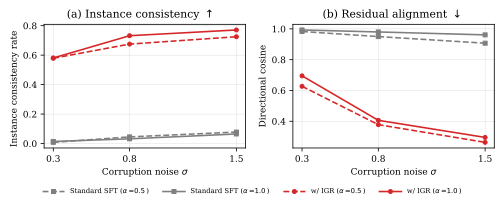
MLR remains stable across nearby evaluation choices. Sensitivity of MLR to the occlusion-overlap threshold and the persistence requirement; each cell is events / 63 (MLR in %), and every setting uses the same eligible set. The main setting (τocc = 0.15, k = 2) is highlighted. Across nearby occlusion-overlap thresholds and persistence requirements, EVEWorld exhibits fewer persistent target-instance violations than Standard SFT in all twelve configurations, with relative reductions between 70.0% and 88.9%.
| τocc | Standard SFT | EVEWorld | ||||
|---|---|---|---|---|---|---|
| k = 1 | k = 2 | k = 3 | k = 1 | k = 2 | k = 3 | |
| 0.10 | 11 / 63 (17.46) | 5 / 63 (7.94) | 4 / 63 (6.35) | 2 / 63 (3.17) | 1 / 63 (1.59) | 1 / 63 (1.59) |
| 0.15 | 14 / 63 (22.22) | 7 / 63 (11.11) | 5 / 63 (7.94) | 3 / 63 (4.76) | 1 / 63 (1.59) | 1 / 63 (1.59) |
| 0.20 | 17 / 63 (26.98) | 9 / 63 (14.29) | 6 / 63 (9.52) | 3 / 63 (4.76) | 1 / 63 (1.59) | 1 / 63 (1.59) |
| 0.25 | 20 / 63 (31.75) | 10 / 63 (15.87) | 7 / 63 (11.11) | 4 / 63 (6.35) | 3 / 63 (4.76) | 1 / 63 (1.59) |
The advantage is not specific to a single nearby occlusion threshold or persistence rule.
Repeated Gemini-IF evaluation yields 53.57 ± 2.92 for Standard SFT and 60.85 ± 1.79 for EVEWorld.
Across three matched inference trials, EVEWorld improves all six SFT250 pairs at 3.8 s and 5.8 s horizons; mean gains are +1.54 and +1.56 points.
Matched-seed evaluations in the appendix retain the advantage and further control for generation stochasticity.
Scope of MLR
MLR is designed for manipulation tasks in which the target-instance count is expected to remain unchanged. Tasks that intentionally alter the count, including cutting, splitting, assembly, or disassembly, require an instruction-conditioned expected-count model.
MLR does not capture count-preserving failures such as deformation or identity drift; these form a complementary class of temporal inconsistency addressed by TIA.
Limitations of EVEWorld
The current supervision is local and pairwise and does not explicitly model long-horizon state dependencies or complex multi-object interactions.
Residual long-horizon drift
A residual failure mode remains in long-horizon rollouts: the target can drift outside the workspace late in the interaction. This is consistent with the local, pairwise scope of the current supervision.
Sampling configuration. The main result uses the step-250 checkpoint with CFG weight w = 7.0. Across the evaluated training-step × guidance grid, Gemini-IF generally increases with stronger guidance, whereas MLR varies non-monotonically. We therefore report the joint configuration that attains MLR 1.59% with Gemini-IF 60.85 rather than interpreting CFG as a monotonic control for consistency.
More analysis
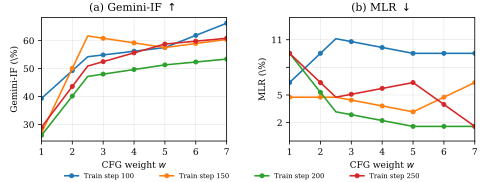
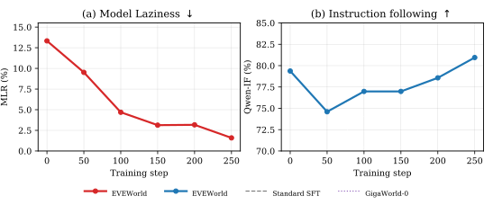
Detector calibration. Detector v1 is the raw count-deviation rate before spatial merging, occlusion-aware under-count handling, and temporal persistence; peak dev. is the mean maximum raw count deviation maxt |Nt − N0|. The final protocol is deliberately more conservative than its raw component on every checkpoint.
| Model / config. | Detector v1 (%) | MLR (%) ↓ | Events / elig. | Peak dev. |
|---|---|---|---|---|
| GigaWorld-0 (pretrained) | 62.1 | 12.70 | 8 / 63 | 0.23 |
| Official GR1 fine-tune | 68.8 | 7.94 | 5 / 63 | 0.14 |
| Standard SFT | 63.2 | 11.11 | 7 / 63 | 0.27 |
| EVEWorld (step 100) | 70.4 | 4.76 | 3 / 63 | 0.17 |
| EVEWorld (seed 6666, step 250) | 66.7 | 3.17 | 2 / 63 | 0.15 |
| EVEWorld (u3, step 300) | 68.0 | 3.17 | 2 / 63 | 0.03 |
| EVEWorld (step 250, main) | 70.4 | 1.59 | 1 / 63 | 0.11 |
Robustness of duplicate removal across corruption strengths. Retention is the fraction of injected duplicate area the reconstruction preserves; directional cosine measures how far the residual error is aligned with the injected duplicate. Before and after are the Standard SFT checkpoint and the model after 50 IGR fine-tuning steps.
| Opacity α | σ | Ret. before ↓ | Ret. after ↓ | Rel. reduction (%) ↑ | Dir. cos. before / after |
|---|---|---|---|---|---|
| 0.5 | 0.3 | 0.992 | 0.421 | 57.5 | 0.983 / 0.627 |
| 0.5 | 0.8 | 0.955 | 0.325 | 66.0 | 0.950 / 0.378 |
| 0.5 | 1.5 | 0.922 | 0.275 | 70.2 | 0.907 / 0.263 |
| 1.0 | 0.3 | 0.986 | 0.419 | 57.5 | 0.993 / 0.695 |
| 1.0 | 0.8 | 0.968 | 0.268 | 72.3 | 0.980 / 0.406 |
| 1.0 | 1.5 | 0.935 | 0.229 | 75.5 | 0.961 / 0.295 |
IGR restoration controls. Spatial emphasis alone is worse than using no weighting at all, so the benefit comes from the restored target region rather than from re-weighting the frame in general.
| Variant | MLR (%) ↓ | Env ↑ | Object ↑ | Behavior ↑ | Overall ↑ |
|---|---|---|---|---|---|
| IGR w/o spatial emphasis | 6.35 | 56.32 | 44.00 | 82.27 | 61.11 |
| Spatial emphasis only | 14.29 | 34.48 | 34.67 | 62.41 | 44.97 |
| IGR only | 4.76 | 49.43 | 36.67 | 69.50 | 51.85 |
| EVEWorld | 1.59 | 72.41 | 50.33 | 64.89 | 60.85 |
Failure-mode comparison against methods that target related behaviors. Each route is scored against its own matched control; for EVEWorld the control is Standard SFT. Dyn. / Train / Test / Causal / Repair denote explicit dynamics modeling, training-time intervention, test-time intervention, causal generation, and learned repair. ΔMLR: negative is better; ΔGemini-IF: positive is better. The LAD-LoRA row leaves ΔMLR at 0.0% but still gives up instruction following (ΔGemini-IF = −6.1%).
| Route | Design elements | Relative change | |||||
|---|---|---|---|---|---|---|---|
| Dyn. | Train | Test | Causal | Repair | ΔMLR ↓ | ΔIF ↑ | |
| PhysicsLatent | ✓ | ✓ | · | · | · | −7.0 | −11.9 |
| EAG sampling guidance | ✓ | · | ✓ | · | · | +150.0 | +10.0 |
| LAD-LoRA | ✓ | ✓ | · | · | · | 0.0 | −6.1 |
| Causal Frontier | · | ✓ | · | ✓ | · | +35.4 | −53.8 |
| ICH-D | ✓ | ✓ | ✓ | · | ✓ | +16.6 | −30.6 |
| EVEWorld (ours) | ✓ | ✓ | · | · | ✓ | −85.7 | +13.6 |
Confidence intervals and variance
Cross-model MLR, with confidence intervals. DreamGenBench, 63 shared detector-eligible items. Coverage is the fraction of prompts the detector can score; the shared set is what makes the models comparable.
| Model | Events / elig. | MLR (%) ↓ | 95% Wilson CI | Coverage (%) |
|---|---|---|---|---|
| GigaWorld-based models | ||||
| GigaWorld-0 (pretrained) | 8 / 63 | 12.70 | [6.58, 23.11] | 50.00 |
| Official GR1 fine-tune | 5 / 63 | 7.94 | [3.44, 17.27] | 50.00 |
| Standard SFT | 7 / 63 | 11.11 | [5.49, 21.20] | 50.00 |
| EVEWorld | 1 / 63 | 1.59 | [0.28, 8.46] | 50.00 |
| General video models | ||||
| Wan2.2-TI2V-5B | 11 / 63 | 17.46 | [10.04, 28.62] | 50.00 |
| Wan2.2-I2V-A14B | 7 / 63 | 11.11 | [5.49, 21.20] | 50.00 |
| CogVideoX1.5-5B-I2V | 18 / 63 | 28.57 | [18.90, 40.70] | 50.00 |
| Cosmos-Predict2-2B | 9 / 63 | 14.29 | [7.70, 24.97] | 50.00 |
Cross-domain MLR, with confidence intervals. WorldArena 1.0, the same 157 shared detector-eligible videos for every model. Coverage is 19.22% throughout; the two baselines coincide at 27.39% while violating on different videos.
| Model | Events / elig. | MLR (%) ↓ | 95% Wilson CI | Coverage (%) |
|---|---|---|---|---|
| GigaWorld-0 (pretrained) | 43 / 157 | 27.39 | [21.02, 34.84] | 19.22 |
| Standard SFT | 43 / 157 | 27.39 | [21.02, 34.84] | 19.22 |
| EVEWorld | 21 / 157 | 13.38 | [8.92, 19.58] | 19.22 |
Gemini-IF judge variance. The same generated videos are judged repeatedly; the ordering between models is unchanged across repeats, and EVEWorld has the smallest spread of the four GigaWorld-based entries.
| Model | Repeats | Overall ↑ | Env | Object | Behavior |
|---|---|---|---|---|---|
| GigaWorld-0 | 6 | 60.19 ± 2.90 | 54.60 | 54.33 | 69.86 |
| Official GR1 fine-tune | 2 | 63.10 ± 6.17 | 55.17 | 46.00 | 86.17 |
| Standard SFT | 6 | 53.57 ± 2.92 | 51.72 | 42.00 | 67.02 |
| EVEWorld | 6 | 60.85 ± 1.79 | 72.41 | 50.33 | 64.89 |
Matched inference seeds. Standard SFT and EVEWorld run under the same seeds and the same judge budget, so the advantage is not attributable to favorable sampling. Under the FlowWAM transfer protocol, five complete generations from one checkpoint differ by at most 0.68 Local-11 points (57.28 ± 0.28).
| Seed | Judge repeats | Standard SFT (%) | EVEWorld (%) | Δ (pp) |
|---|---|---|---|---|
| 004 | 6 | 53.57 ± 2.92 | 60.85 ± 1.79 | +7.28 |
| 061 | 3 | 57.41 ± 2.79 | 58.73 ± 1.37 | +1.32 |
Long-horizon process evaluation across models (Qwen-based judge, 92 matched prompts). Severity measures shortcut severity; the last two columns are the fractions of generations containing any shortcut or a missing stage. Every model degrades as the horizon doubles, and the frozen baseline degrades fastest.
| Model / horizon | Severity ↓ | Any shortcut ↓ | Missing stage ↓ | n |
|---|---|---|---|---|
| GigaWorld-0 SFT, 3.8 s | 0.94 | 0.32 | 0.30 | 92 |
| GigaWorld-0 SFT, 7.8 s | 1.79 | 0.63 | 0.60 | 92 |
| GigaWorld-0 pretrained, 3.8 s | 1.17 | 0.39 | 0.38 | 92 |
| GigaWorld-0 pretrained, 7.8 s | 1.97 | 0.67 | 0.66 | 92 |
| Wan2.2-TI2V-5B, 3.8 s | 2.30 | 0.82 | 0.72 | 92 |
PBench details
PBench Robot physical-QA accuracy across output durations — 913 QA pairs over the same 174 videos per duration. Domain is the overall PBench Robot score; Phys., Space, and Time are accuracy on physical, spatial, and temporal reasoning. Both models degrade as the rollout lengthens, and the temporal dimension drops fastest. All values are percentages.
| Duration (s) | GigaWorld-0 (pretrained) | Standard SFT | ||||||
|---|---|---|---|---|---|---|---|---|
| Domain | Phys. | Space | Time | Domain | Phys. | Space | Time | |
| 3.8 | 82.43 | 85.71 | 84.24 | 82.18 | 80.98 | 86.69 | 83.33 | 79.64 |
| 5.8 | 79.87 | 84.42 | 82.12 | 74.18 | 79.89 | 85.71 | 83.94 | 74.91 |
| 9.8 | 74.32 | 83.77 | 76.06 | 65.09 | 78.90 | 87.99 | 79.70 | 74.55 |
| 15.8 | 67.54 | 79.22 | 73.03 | 49.82 | 68.12 | 79.55 | 70.61 | 53.82 |
| 19.8 | 66.97 | 76.95 | 74.55 | 50.18 | 66.76 | 78.25 | 73.94 | 49.45 |
Cross-trial robustness on PBench Robot. Each SFT250–EVEWorld pair uses the same inference seed and the three trials use different seeds under otherwise identical settings; scores are the overall PBench Robot score judged by Gemini-3.8-Flash. EVEWorld wins all six paired trials, so the gain is not an artifact of a single sampled seed.
| Horizon | Trial 1 | Trial 2 | Trial 3 | Mean Δ ↑ | ||||||
|---|---|---|---|---|---|---|---|---|---|---|
| SFT250 | EVEWorld | Δ | SFT250 | EVEWorld | Δ | SFT250 | EVEWorld | Δ | ||
| 3.8 s | 57.37 | 59.27 | +1.90 | 53.40 | 55.07 | +1.67 | 59.57 | 60.61 | +1.04 | +1.54 |
| 5.8 s | 59.42 | 60.02 | +0.60 | 60.36 | 63.02 | +2.66 | 60.79 | 62.21 | +1.42 | +1.56 |
Efficiency details
Rollout length, latency, throughput, memory and cost. Latency is reported as p50 / p95 in seconds; the longer the rollout, the higher the per-video cost.
| Output (duration, frames) | Latency p50 / p95 (s) | Throughput (frames/min) ↑ | Peak memory / GPU (GiB) ↓ | Cost (GPU-h / 1k) ↓ |
|---|---|---|---|---|
| 3.8 s · 61 | 8.166 / 8.403 | 442.1 | 38.19 | 18.40 |
| 5.8 s · 93 | 10.932 / 11.352 | 502.2 | 38.33 | 24.69 |
| 9.8 s · 157 | 18.323 / 19.249 | 504.8 | 38.99 | 41.46 |
| 15.8 s · 253 | 31.503 / 33.523 | 469.5 | 41.47 | 71.85 |
| 19.8 s · 317 | 41.737 / 45.007 | 443.3 | 40.70 | 95.34 |
Peak memory stays essentially flat across output lengths (38.19 → 41.47 GiB), so the additional cost of longer rollouts is latency and GPU-hours rather than model size. The cost therefore scales with rollout length rather than with the method.
Resources and citation.
Everything needed to read about, run, and cite this work.
@software{eveworld2026,
title = "{EVEWorld}: Physical Evolution Supervision for Embodied World Models",
author = "{Anonymous Author(s)}",
year = {2026},
url = "{https://behappya.github.io/EVEWorld/}",
note = "Code and project page released for anonymous review."
}